These poems and illustrations are dedicated to my beautiful girl,
Sharmaine Faith F. Vargas
Personally written and illustrated by Vener
Personal Poem Blog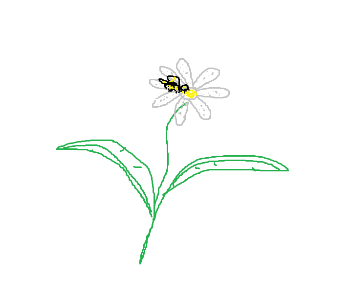
A five-year-old bee met a two-year-old flower.
That beautiful flower was beside the bee.
As a bee, you ought to glance at least once for hours—
It’s a wonder he didn’t do anything, just let it be.
Time flies; he strayed away from it.
Some bees did try to prey on the flower,
Made the flower wrapped in a cower,
And that caused it to almost wilt.
Eventually, the flower was beside him again.
Pehaps this is where it all begins.
As he gets closer to the flower,
The bee keeps on growing fonder.
For five full years, he had no aim,
No want, no wish, it was the same.
But for some strange reason, he couldn't explain,
The bee yearns for that flower again.
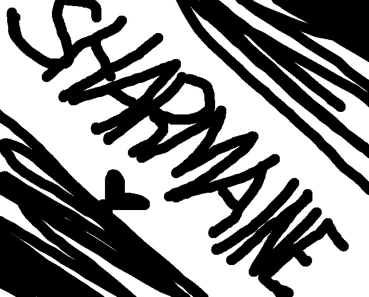
Somehow, you became the apple of my eye.
Here I am, and I can't really deny.
Astonished by your cute little smile,
Reasoning has just gone for a while.
Moods are rising, floating high.
Angels don’t only live in the sky—
It was you, being here, that proved it’s not a lie.
Now everything feels like a dream passing by.
Even if I’m not around, on me you can rely.
Fated to meet you somehow,
All of this wasn't in my plan.
I'm enjoying my own company,
Then you arrived suddenly.
Having you feel like I'm alive
Whatever version you are,
You are still you—
Sad, angry, happy,
Kind, moody, cranky,
Beautiful, cute, pretty,
Often full of eme.
It’s all you,
And I love all of you.
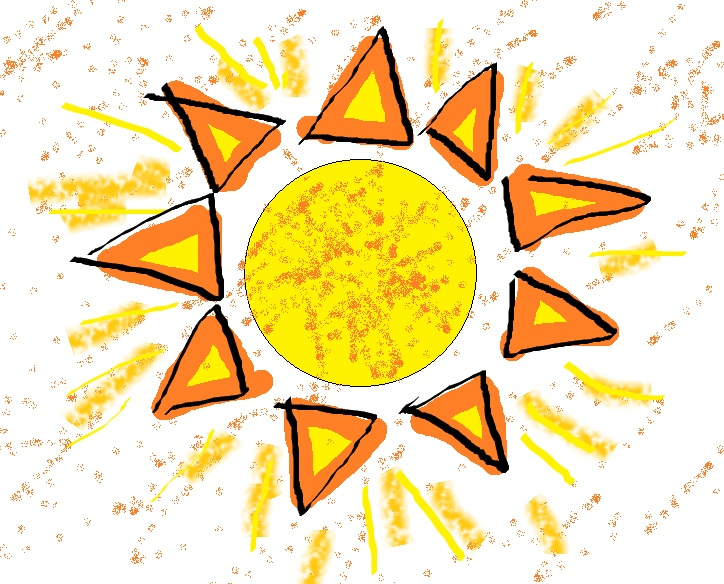
She’s like the sun—she’s burning hot,
It was scorching, to the point that
She burned my urge to be alone,
To stay in silence on my own,
To never love or care again,
To believe “forever” isn’t certain.
She became the light that brightens
My five-year-long darkness.
She burned my loneliness to ashes,
Along with the feeling of coldness.
Your past, it doesn’t matter, I know that’s true,
But still, I wish those days were spent with me and you.
The one beside you through each memory,
The thought alone feels heavy inside me.
I envy things I can't even control,
But don’t you worry, it won't destroy us at all.
It only proves how much I care—
I just wish, in every moment, I were the one there.
I promise, every time, to do my best,
To be someone where you can rest,
And do everything to pass your test,
I know this is for both our interest.
You won't overthink things with me,
I assure you, you're my one and only.
I'll be with you until our hair turns gray,
And make sure I'm your good karma, bae.
What makes people hold on to their relationships?
Does faith make you stay when things turn to shit?
For me, I know I'll stay because of Faith.
So baby, be confident in me always.
’Cause all of me is meant for you alone,
I’ll always be near, your Vener, your own.
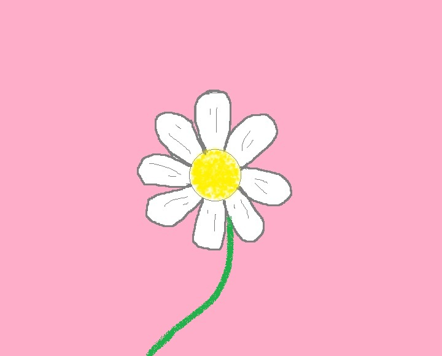
I have my very own flower,
That no other blossom can replace her.
She who bloomed on the ninth day of May,
Just past 1:46 in the warmth of midday.
In my life, I had experienced rain and summer,
And lately, for so long, it had been winter.
Then she became the daisy of my life,
And brought me the springtime.
Falling into her was inevitable,
Perhaps the very reason I was born.
She had a beauty that was graceful,
Something that will never be worn.
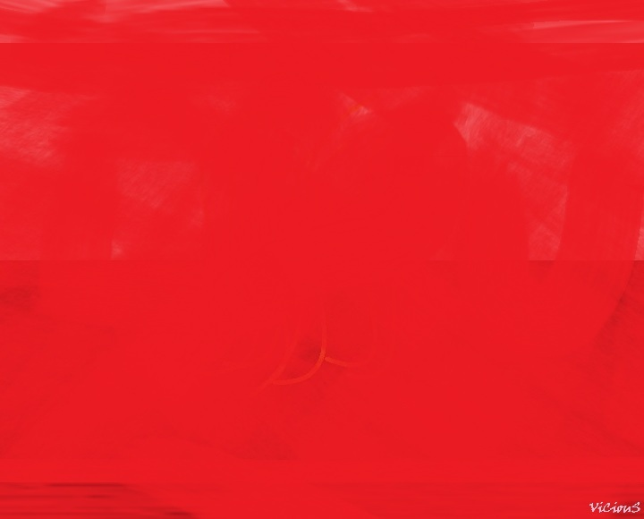
My lone time is sadder now than before,
This loneliness is what I truly abhor.
They said to love unconditionally,
But I can’t, for I yearn for yours so dearly.
So, my dear, let your love devour me,
I'll gladly fall into your endless void for eternity.
I’ll be both your light and your darkness,
And to every problem, be your fortress.
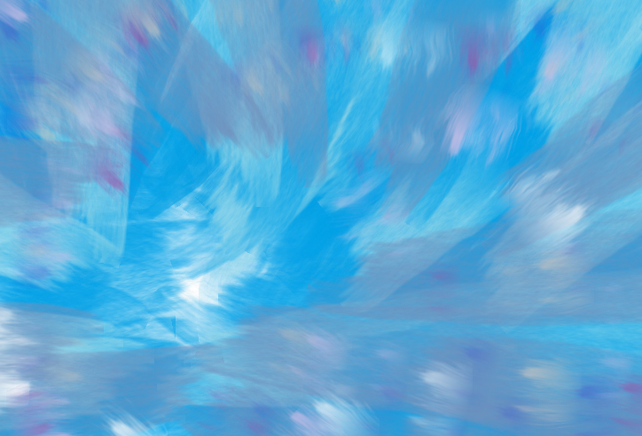
I once bid farewell to poetry,
Felt that the end was guaranteed.
My mind held no idea; it was empty,
Like stagnant water, still indeed.
But now the ideas keep on flowing,
Even when I sit alone, doing nothing.
I feel as though I’m the happiest poet,
With you as the subject that gives life to it.
Poems became more beautiful than before,
For you are the inspiration that stirs my fervor.
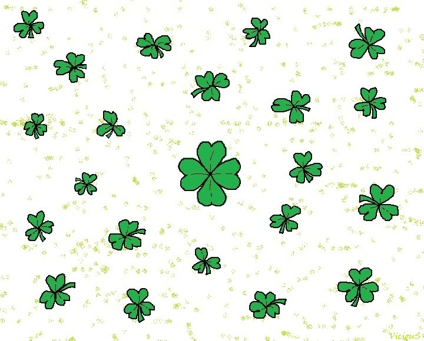
Beautiful things happen again,
I know you're the reason for this.
Hence, words fall short to explain,
It's a moment I feel blessed.
It took a while for me to discover,
I'm so lucky and I can't get over.
Bad days now don't really matter,
With you, I know that I'm better.
It makes sense that once,
You were just the number four,
And I knew in just a glance
That you were my four-leaf clover.
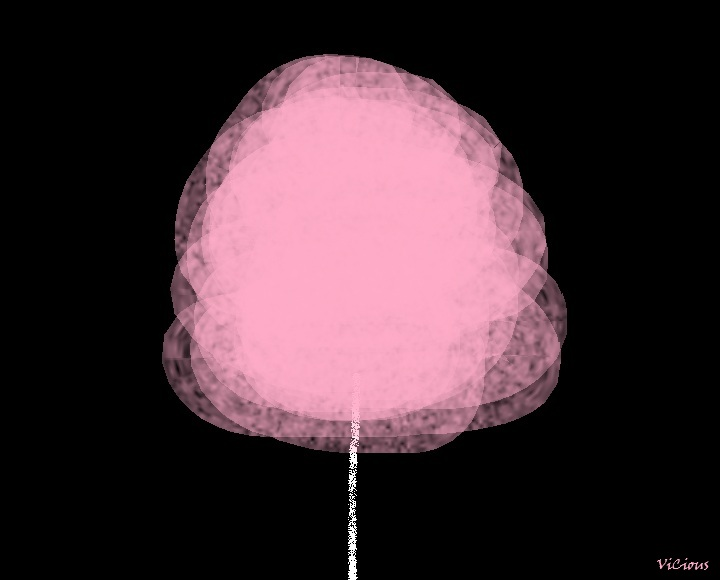
Just like cherry blossoms gracefully falling,
Flamingos in elegance, beautifully walking,
Soft and sweet, like cotton candy,
The lotus blooms with beauty and purity.
The vast sky painted in shades of pink,
A wonder that makes my soul bethink.
All share the hue that awes my view,
And pink will always remind me of you.
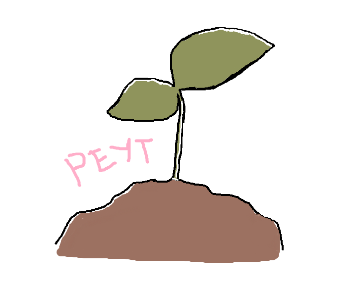
Funny how I was mesmerized,
The moment I saw you play with kids.
It was then that I began to doubt,
That something had stirred within my core.
Later on, I felt and just realized,
I even thought it would pass—God forbid.
The tree of love slowly began to sprout,
Now I want it to grow even more.
Even now, I feel surprised.
That we're getting off the grid,
And with you, I want to go all out;
I would stay with you, I swore.
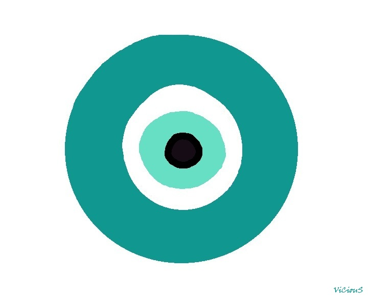
Pardon this silliness of mine,
For I always crave your time.
You're constantly on my mind;
I want you in my arms, even just for a while.
I love being with you,
Be stuck together, just like glue.
The feeling of being unlucky,
Stops the moment you embrace me.
Just you being with me—
Even the God of Fortune would envy.
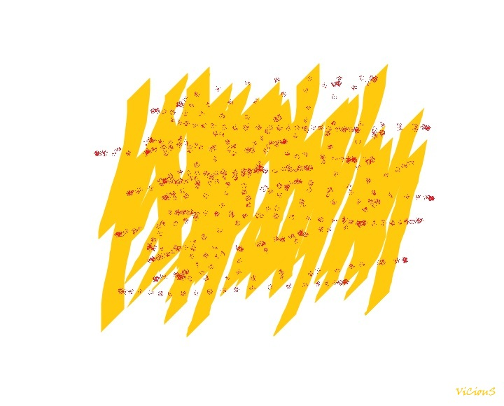
The fries I bought that we ate,
Just the two of us in the corner.
Your stored BBQ powder makes it great,
It was a moment that I really treasure.
Just a perfectly normal day, it was,
No hidden agenda, no deception.
Enjoyed the genuine company, with no pretension,
Hoping we’ll cherish these kind of memories of us.
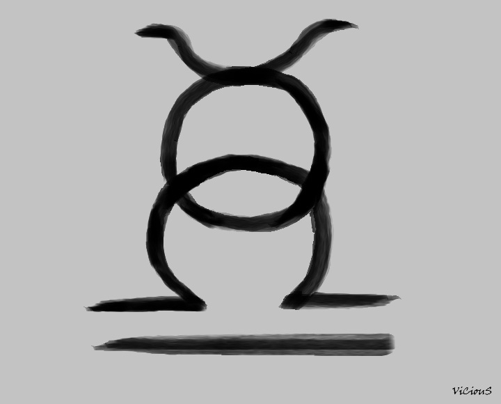
I know this day is about me,
But I want all things to be about you.
I’m not really fond of my own birthday—
Things have shifted; it won’t happen without you.
Now I’m being reformed,
And I’ll be better with each dawn.
I’ll be happier anticipating this day;
Words would fall short if I tried to convey
The feelings I have, all because of this Taurus
From now on, my birthday has found its true purpose.
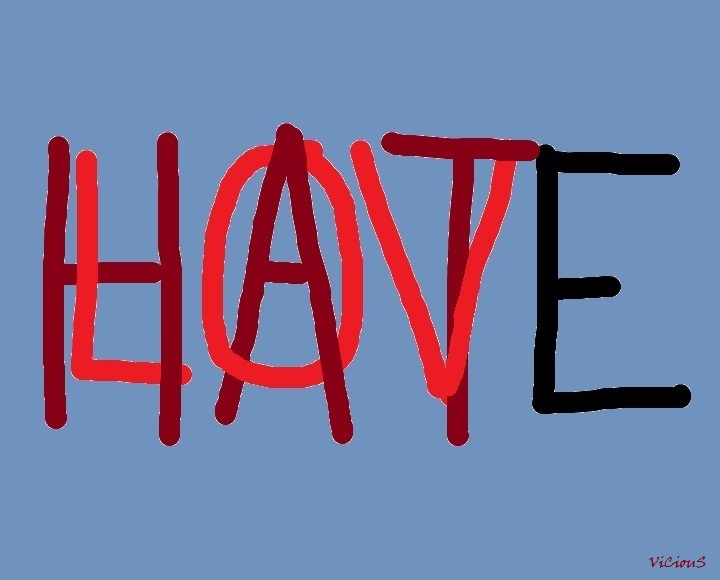
I’m a lover of this hater.
She hates choosing, hates men,
Hates eating fish, hates Tokyo Tokyo,
Hates runny eggs, hates chico,
And hates eating outside alone.
But she chose me—and loves me.
That’s why I love her.
If I were to depict your beauty,
It is so simple, yet so intricate—
Like a fine wine, so delicate,
Like staring at the sunrise or sunset.
Your beauty transcends, even in silhouette;
To me, you’re someone who is poem-worthy.
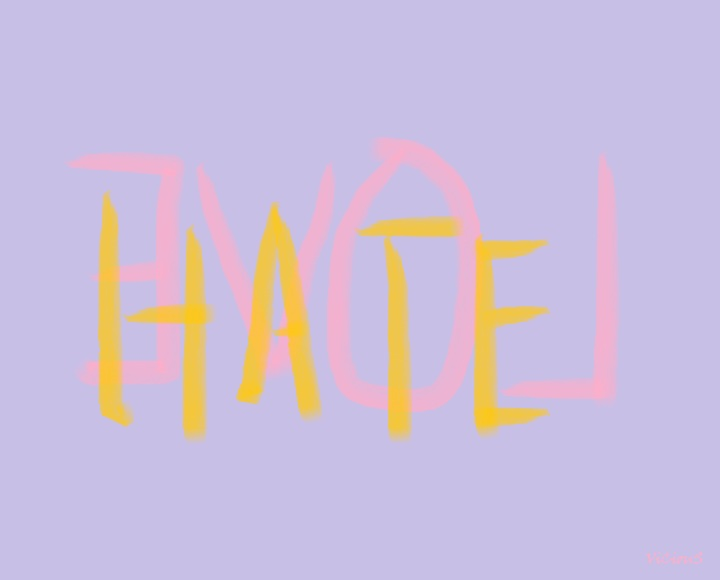
I’m in love, and I’m a hater.
I hate it not receiving any of your texts.
I hate it not hearing your voice.
I hate it not seeing you.
I hate it when you are not with me.
I’m so madly in love that
I’ve started hating all of those things.
Dear Peyt,
Because I love you,
I can be miserable with you,
As I will be happier with you.
Because I love you,
I can die for you,
As I will live just for you.
Because I love you,
I can endure the bitterness in life,
As I will enjoy the sweetest with you.
Because I love you,
I will do anything for us —
And that’s because I love us.
With all my love, Vener.
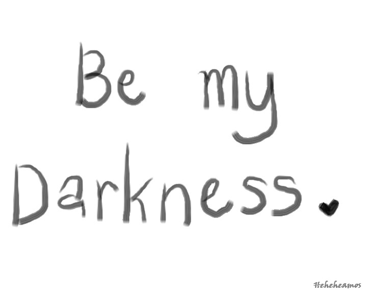
Dear Vener,
Because I love you,
I can be troubled,
As I will always find calm in you.
Because I love you,
I can be lost,
As I will know I will be found.
Because I love you,
I can bear being apart from you,
As I will always know that we will be together, forever.
Because I love you,
I will do anything for us —
And that’s because I love us.
With all my love, Peyt.
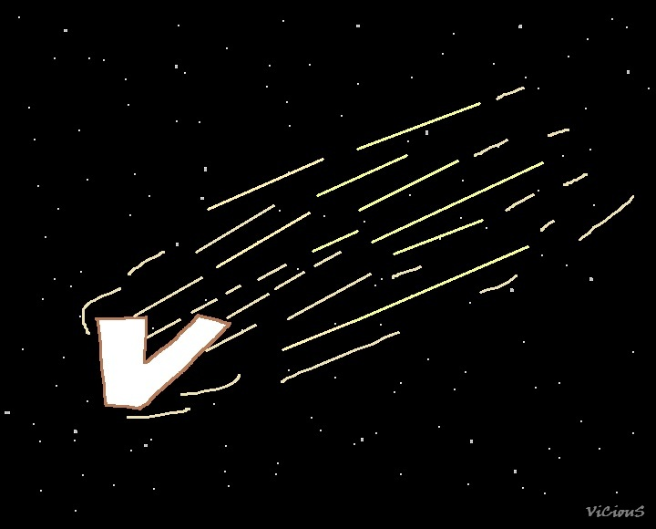
There was a time I avoided affection,
Till you made me change my trajectory.
You, who always matched my energy —
Now I crave your attention.
Loving you is so fulfilling,
As you appreciate the love I give.
I'll always love you, don't misgive,
I'm willing to give you everything.
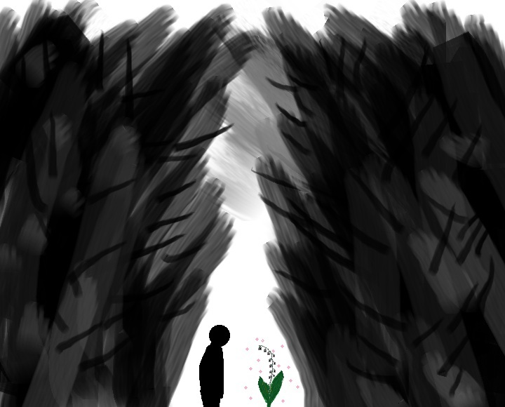
I’m lost, wandering the forest all alone,
Where every path feels quiet and overgrown.
I’ve been circling these woods for hours
Until I found a beautifully grown flower.
Though I know I am now bewildered,
It feels as though my heart has been favored.
I won’t flip out my shirt,
So my gaze upon you won’t divert.
I’d stay lost forever just to see
Your intriguing beauty with such serenity.
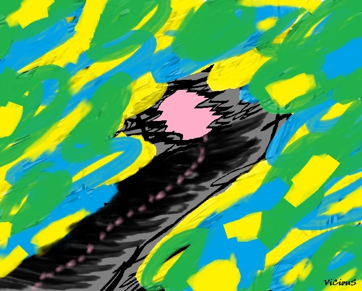
We are riding in a two-seater vehicle,
Riding it happily and excitedly.
The journey had been smooth—until lately;
Then the road ahead feels far from ideal.
Even in confusion and dizziness,
We move ahead with steadfastness.
We’ve been navigating this journey,
Despite the adversities, it’ll be worthy.
A trip full of trials and ordeal,
And these hardships will make it surreal.
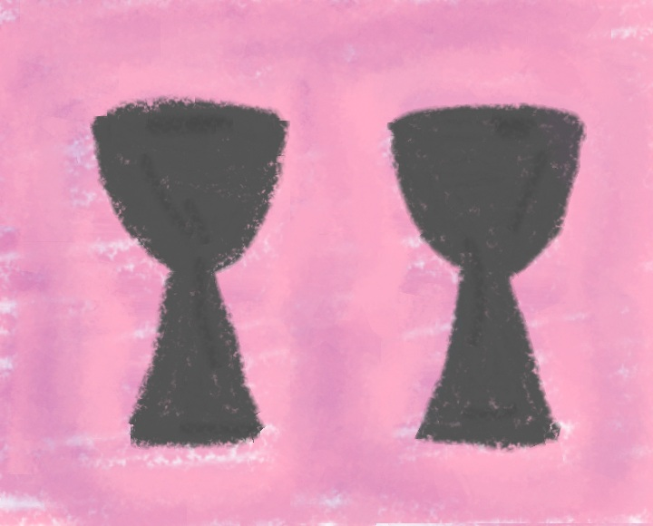
Shrouded in strange curiosity,
Sought something, wondering what it might be,
The cards denied them as soulmates,
Foretelling love destined to drift apart.
But another universe held those doomed fates,
For they’d be crestfallen if in their lives they each had no part.
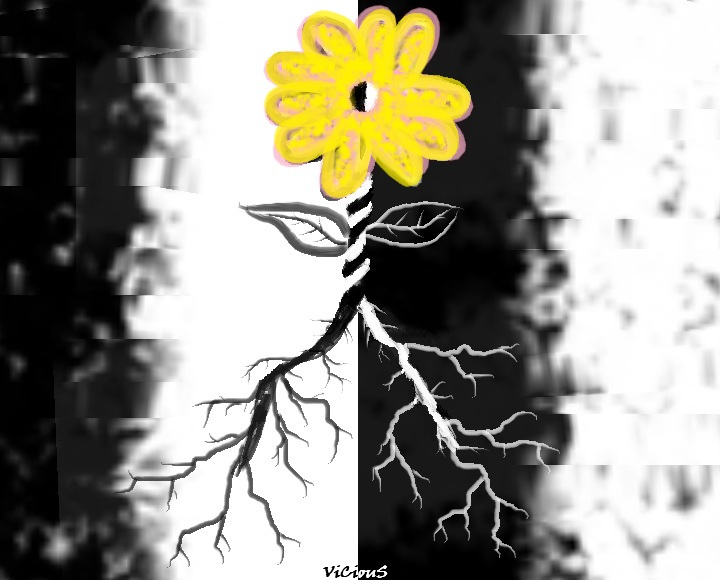
We grew separately,
under the same sky,
but shaped by different environments.
We were wounded and tested,
learning how to heal, adapt, and rise
in our own ways.
Each of us was nurtured differently,
yet even with different roots, we,
bloomed the same flower—still.
Compilation of music with Peyt!